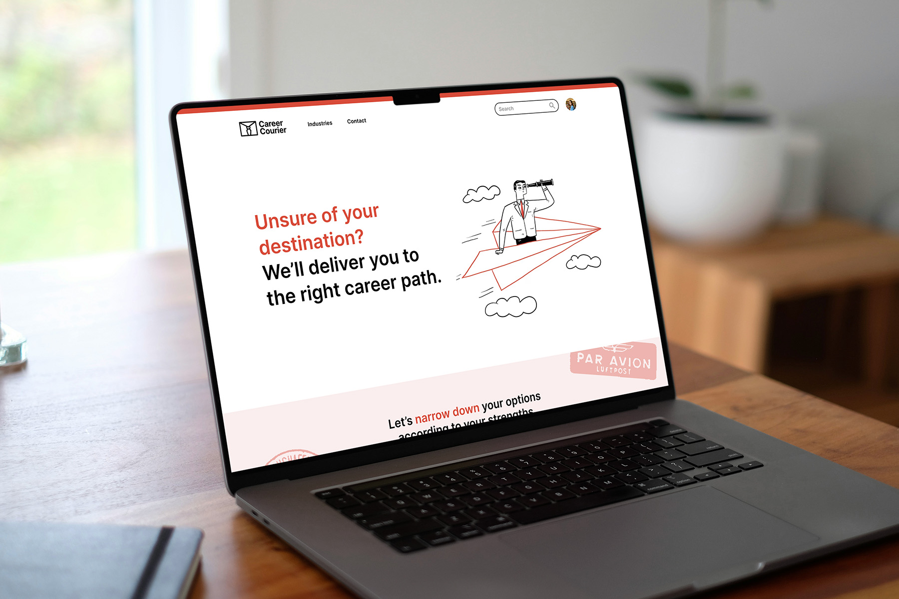
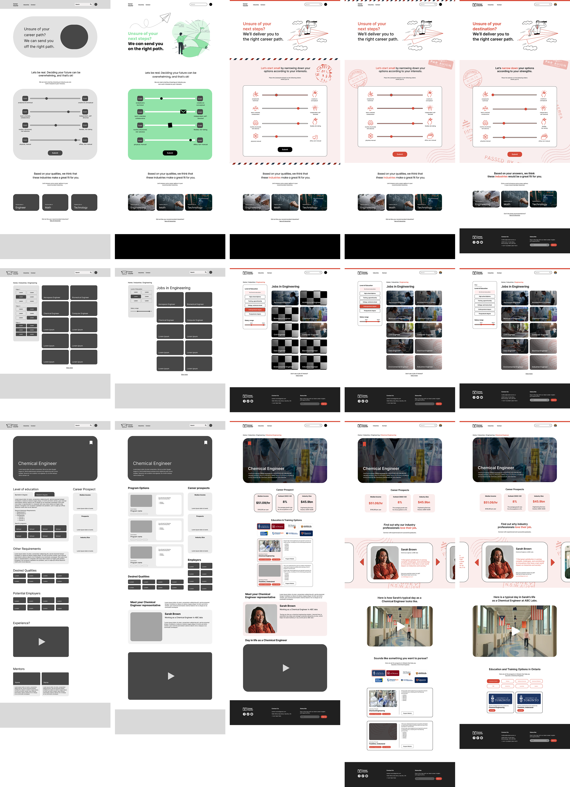

Career guidance tool for high school students
Overview
Career Courier is a web application designed to help high school students in Ontario make informed decisions about their paths after graduation. It provides important information and necessary resources in a structured and well-paced manner. Instead of suggesting programs and schools based solely on the student's interests, we aim to present all the appropriate career and training options.
This project was completed for Hackville 2024 in collaboration with Adriana Baric, Euna Lim, and Kelly Kou.
Role
UX/UI Designer
Tools
Figma, React
Duration
Jan 2024 (36 hours)
The challenge
Helping soon-to-be high school graduates find their path
During our ideation session, we realized that everyone in our team was uncertain about what to do after high school and had regrets regarding our decisions. Similarly, many high school students struggle to determine their path after graduation. They have to make their decisions early to enroll in the necessary courses and meet admission requirements, leaving little room to adapt if their plans change. Those who proceed directly to university or college may find themselves underprepared or ill-informed about post-secondary education.
The process
How we built our solution
We looked at existing career advisement tools and found that many overload users with information, use long and impractical tests, feature outdated designs, or put their information behind a paywall. We worked on creating a more straightforward process and more intuitive interfaces. From high-fidelity wireframes, we made a prototype in Figma, converted it into React components, and connected it to a public domain.

The solution
More comprehensive career guidance
With Career Courier, we aim to provide information in comprehensive and understandable formats for high school students to make well-informed decisions about their professional future. The platform holds the necessary resources to support students' decisions, facilitating connections with industry experts and showcasing available training and education options. We also eliminated the lengthy personality questions that don't address students' needs.